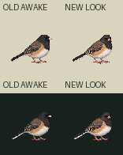
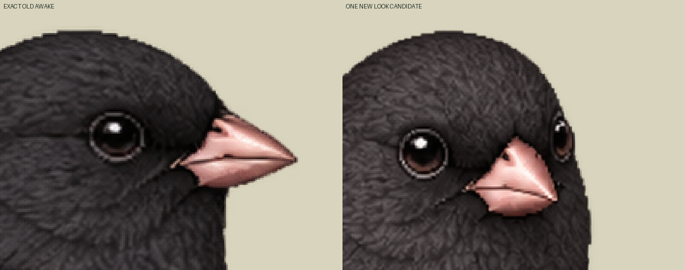
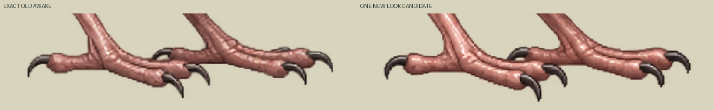

One new drawing from one native call; no new neutral, blink or canon. Compare actual head direction, hood/bill identity, body outline and toe shapes at normal size. Independent source-art compatibility remains pending. Old narrow/closed rest is excluded as awake conditioning.
Normal canvas78CSS/world units, density32/13, old bird52world wide. Retained pivot122,150 is a registration origin. Inherited foot samples114,146 and143,146 are positive in both frames and visibly lie in the toe regions, but do not certify anatomical support. Native claw/toe shapes and hood/body feathers are redrawn. Fixed-foot ROI baseline changes at most1outputpx (0.40625world), centroid0.2114world. No fixed-sole or byte-identical-body claim.
Exact original native1254 is retained. Full native→192 nearest conversion only, reference1024/1254 ratio declared; no per-pose fitting, painting, warp, translation or contact snap. Requested25–35° yaw is art direction, not measured anatomy. One-shot30Hz schedule: awake30ticks→look12ticks→exact awake30ticks, with no generated turn intermediates or smoothness claim. Idle contains only unchanged awake.



Loading exact two-frame source atlas…
Standalone `look-yard78.apng` is a78RGBA display derivative; `look-preview.apng` retains192 output resolution. Own explicit look profile remains unreviewed, activation none, packetBindingReady false, appBound false. Canonical Zod/Sharp NOT_RUN; current Mac named-look support UNKNOWN. Existing corrected awake/blink stays authoritative. No runtime, contact-physics or biological timing approval.